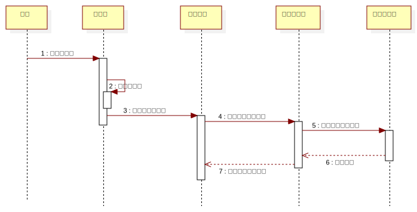

InteractionInstanceSet1
UMLInteraction
PlanAssistant
::
«analysisModel»Analysis Model
::
显示个人地图
::
InteractionInstanceSet1
Description
none
Diagrams

显示个人地图序列图
Participants
用户
主界面
个人地图
数据库服务
个人地图表
Messages
打开主界面 (用户→主界面)
显示主界面 (主界面→主界面)
初始化个人地图 (主界面→个人地图)
请求个人地图数据 (个人地图→数据库服务)
获取个人地图数据 (数据库服务→个人地图表)
返回数据 (个人地图表→数据库服务)
显示个人地图数据 (数据库服务→个人地图)
Properties
Name
Value
name
InteractionInstanceSet1
stereotype
null
visibility
public
isReentrant
true
Owned Elements
显示个人地图序列图